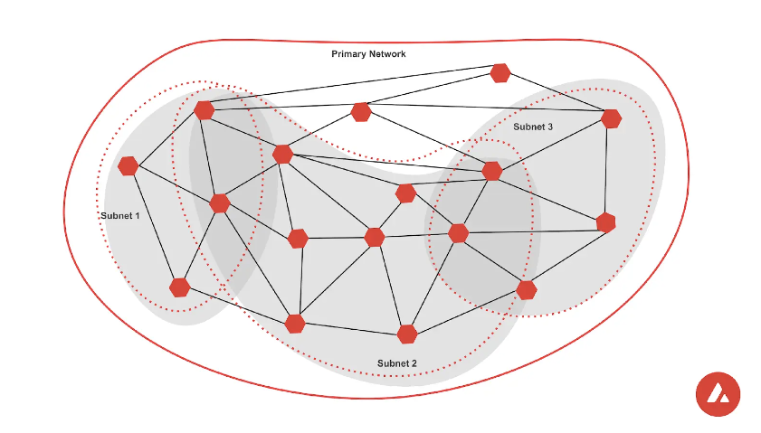

Avalanche
Info
To keep the content on this page factually correct and up-to-date, contributions are welcome.
Polkadot and Avalanche both have an architecture that allows for application-specific blockchains to be designed and connected to a primary network. In Polkadot, the primary network is the relay chain and Avalanche does this with 3 main chains - the P-chain, X-chain, and C-chain. Similar to how Polkadot has its Parachains that connect to the relay chain, Avalanche has what’s called subnets. Similar to Polkadot, Avalanche also uses a PoS mechanism for achieving consensus. The validators stake their AVAX tokens in order to participate in the PoS system and secure the network.
Architecture¶
Avalanche's architecture separates the responsibility of a layer-1 smart contract platform into three chains. This allows for a separation of concern over validators and consensus, transactions, and smart contract execution. Avalanche uses a DAG (Directed Acyclic Graph) structure for one of its chains which is non-linear. Polkadot uses the linear chain structure similar to Bitcoin and Ethereum. Smart contracts in Polkadot are implemented on parachains. Polkadot being a layer-0 blockchain, is not a smart contract platform and does not have plans to support them natively.

Image source: Avalanche docs.
P-chain (Platform)¶
The P-chain is responsible for maintaining the validator set and securing the network. AVAX token holders can spin up their own nodes and become validators by staking their tokens. Similar to the NPoS system that Polkadot uses, Avalanche uses a Delegated PoS which allows token holders to also delegate their token stake to existing validators instead of running their own nodes.
X-chain (Exchange)¶
The X-chain is responsible for the transaction layer of the Avalanche blockchain. It uses a UTXO model like Bitcoin whereas Polkadot uses an account model like Ethereum. This is the only chain that implements the DAG (Directed Acyclic Graph) model for its blockchain, making this the fastest chain on the Avalanche network. This chain does not support smart contract execution.
C-chain (Contracts)¶
The C-chain is where the most activity will happen on the Avalanche network. It allows for different virtual machines to execute smart contract code. Out of the box, it has support for EVM and AVM (Avalanche VM). C-Chain runs a fork of go-ethereum called coreth that has the networking and consensus portions replaced with Avalanche equivalents.
As Polkadot does not have a smart contract layer out of the box, the EVM and WASM smart contract abilities lie in the Parachain layers. This is a major difference between Polkadot and Avalanche. The smart-contract abilities of Avalanche are baked into its three-chain model.
Subnets or sub-networks¶
Avalanche defines a subnet as a dynamic set of validators that achieve consensus on a set of blockchains. In Polkadot's terminology, Subnets can be viewed as public or private blockchain runtimes that can be built on top of the primary network and allow a subset of the validators to validate these runtimes. Similar to the Parachains on Polkadot, Subnets provide the freedom to choose the transaction fee model, tokenomics, and custom compile rules. One or many validators can start validating a subnet runtime, effectively becoming a subset of the overall validator set of the Primary Network.
Consensus¶

Image source: gyuho.dev.
Avalanche consensus uses a family of protocols to achieve security, liveness, and finality. These are known as the Snow* protocols. This group of protocols composed together uses both classical and Nakamoto consensus as well as a Delegated Proof-of-Stake system for its block creators.
The Snow family is a hierarchical collection of systems used to reach finality on Avalanche:
- Slush
- Snowflake
- Snowball
- Avalanche
- Snowman
- Slushie
Compared to Polkadot, Avalanche uses an asynchronous hybrid system that is based on a classical and Nakomoto approach. Polkadot uses a synchronous hybrid model that combines BABE and GRANDPA, where BABE is the algorithm used to build blocks in a probabilistic way, and GRANDPA is a finality mechanism that uses a deterministic approach to adding blocks to the longest chain. In the end, validators agree to whole chains, rather than single new blocks.
Snowball¶
The snowball protocol is an algorithm that nodes use to come to a consensus. Each node continuously queries x number of validators and takes the majority consensus and adopts it as its own. This method, in normal circumstances, will lead to the network reaching a consensus. The scalability of Snowball is promising, as the number of participants in the network grows, the number of consensus messages being passed around remains the same. Nodes will query no more than 20 nodes at a given time.
DAG(Directed Acyclic Graph)¶
DAGs are graphs consisting of vertices and edges. In Avalanche they are used for partial ordering of decisions, such as transactions. Vertices point to each other using edges, and when ordered topologically vertices and edges create a sequence. Edges in the case of Avalanche can be conflicting, and nodes will use the snowball algorithm to make decisions about which edges to keep and which to not.
Staking Mechanics¶
Avalanche uses a Delegated Proof-of-Stake mechanism without any slashing. The barrier to entry for staking as a full node validator is 2500 AVAX, and 25 AVAX to become a delegator. With a minimum stake period being two weeks and a maximum period being a year, for both validators and delegators. It is not clear from the Avalanche documentation what happens after a year, it is likely that validators will have to re-stake and start a new period. Validators acquire points for uptime and correctness of their work, and the remuneration of rewards depends on that.
In Polkadot the minimum stake needed to be a validator is variable, same for being a nominator. The true minimum need to be competitive enough to be included in the active set for validators, or successfully being chosen as a nominator depends on the minimum staked amounts on the network at a given time. Read more about this in the staking page.
Message Passing¶
Avalanche does not have a native trustless message-passing mechanism. Instead, it relies on bridges. Though, because it is an EVM-compatible protocol, it's able to interoperate at a token level. However, subnets do not have a messaging layer out of the box. Polkadot, with its XCM and XCMP messaging protocols, allows for a native and trustless messaging scheme, thus supporting the composability of chains and enabling the development of powerful cross-chain applications.
Governance¶
According to its whitepaper, Avalanche plans to have an on-chain governance mechanism. It currently does not have an on-chain or off-chain system in production. Its governance system will limited to updating only a few key protocol parameters which include:
- Staking amount: This value defines the minimal stake required to be placed as bond before participating in the system.
- Minimum staking time for a node: The minimal amount of time required for a node to stake into the system.
- Maximum staking time for a node: The maximal amount of time a node can stake.
- Minting rate: Reward rate function, also referred to as minting rate, determines the reward a participant can claim as a function of their staking amount given some number of x publicly disclosed nodes under its ownership, over a period of t consecutive minimal staking time timeframes, such that t*minimal staking time* ≤ maximum staking time.
- Transaction fee amount: The fee structure, which is a set of governable fees parameters that specify costs to various transactions.
Limiting the governance functionality is a design choice to increase predictability and safety.
Polkadot's governance mechanism has been in production from the very beginning and was used to slowly release functionality and decentralize the initial network. It is also not limited to a few parameters and in fact, the whole runtime is subject to change via protocol making Polkadot a meta-protocol.
Upgrades¶
The upgrades to Avalanche are administered by the protocol developers at Ava Labs. On Polkadot, the forkless upgrades are administered and deployed through the on-chain governance. When performing upgrades, every single validator on the Subnet will need to perform the identical upgrade. This requires a co-ordination effort among the Validators of the Subnet. On Polkadot, upgrades to Parachains can be deployed automatically without any coordination with the Validators on the relaychain.
Conclusion¶
Avalanche has made some design decisions that allow for an improved smart-contract development environment in which protocol engineers can have the freedom to create their own blockchains and include them in the Avalanche ecosystem via subnets. The trade-offs are that the autonomy of design is limited and blockchains have to buy into the design decisions of Avalanche's main chains. Unlike parachains on Polkadot, Subnets are not able to share the security of the main chains. In addition to utilizing block finality and security of the relay chain, parachains on Polkadot use XCM to pass native trustless messages, instead of having to rely on multiple bridging solutions. However, Subnets are easy to launch when compared to parachains, given that they only need a recommended minimum of 5 validators, which make the costs of launch predictable. Avalanche has plans to implement shared security, interoperability, composability and on-chain governance features which are already offered by Polkadot.